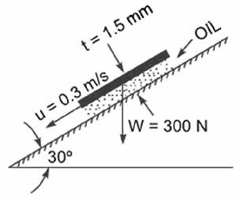
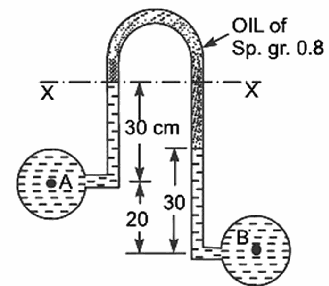

1. Continuum Concept
📝 Theory Notes
- Real fluids are molecular, but we treat them as continuum when studying macroscopic behaviour.
- Assumption valid when characteristic length (e.g. pipe diameter) ≫ mean free path of molecules.
- Physical properties (ρ, μ, σ) are treated as continuous, NOT discrete.
📘 Worked Example
Why does the continuum assumption fail at very low pressures (high vacuum)?
✏️ Book Practice
What is the continuum concept? Why is it necessary in fluid mechanics?
Continuum concept assumes fluid properties (density, viscosity, etc.) vary continuously from point to point, ignoring molecular discontinuity. It is necessary because:
- It allows use of differential calculus in fluid mechanics.
- It simplifies analysis of macroscopic behaviour without tracking individual molecules.
- Valid when system size ≫ mean free path (~10⁻⁷ m for air at STP).
🎓 BIT Mesra PYQs
| Year | Paper | Q.No. | Marks | Question |
|---|---|---|---|---|
| MO2025 | MID | Q.1(a) | 2 | Discuss the concept of continuum in fluid flow practices. |
| MO2024 P1 | MID | Q.1(a) | 2 | What does continuum signify? Justify with explanation. |
| MO2023 | MID | Q.1(a) | 2 | Define continuum for fluids. Importance in fluid domain? |
2. Fluid Properties
📝 Density, Specific Weight, Specific Gravity
| Property | Symbol | SI Unit | Formula |
|---|---|---|---|
| Mass density | ρ | kg/m³ | ρ = m/V |
| Specific weight | γ | N/m³ | γ = ρg |
| Specific gravity | S | dimensionless | S = ρ/ρ_water (ρ_water = 1000 kg/m³) |
Newton's Law of Viscosity CRITICAL
- τ = shear stress (N/m²) · μ = dynamic viscosity (Pa·s) · du/dy = velocity gradient (s⁻¹)
Surface Tension & Capillarity
- σ = surface tension (N/m) · θ = contact angle (water-glass ≈ 0°, mercury-glass ≈ 130°)
- Water rises in glass; mercury is depressed (negative h).
Vapor Pressure & Cavitation
- Vapor pressure: pressure at which liquid starts boiling at a given temperature.
- Cavitation: vapor bubbles form where local pressure < vapor pressure; their violent collapse damages surfaces.
📘 Worked Examples
Plate-sliding viscosity problem (the classic PYQ) — plate at 0.025 mm from a fixed plate, moving at 0.6 m/s, shear 2 N/m².
Capillary rise comparison — 4 mm glass tube, water vs mercury (σ = 0.0725 / 0.52 N/m, θ = 0° / 130°, SG_Hg = 13.6):
✏️ Book Practice
Find kinematic viscosity if dynamic viscosity is 0.08 Pa·s and density 850 kg/m³.
One litre of liquid weighs 7 N. Find specific weight, density and specific gravity. (Asked verbatim in MO2024 P1)
🎓 BIT Mesra PYQs
| Year | Paper | Q.No. | Marks | Question |
|---|---|---|---|---|
| MO2025 | MID | Q.1(b) | 3 | Plate 0.025 mm, 0.6 m/s, τ=2 N/m² → μ |
| MO2024 P1 | MID | Q.1(b) | 3 | γ, ρ, SG of 1 L liquid weighing 7 N |
| MO2024 P1 | MID | Q.2(a) | 2 | Newton's law of viscosity; μ vs temperature for liquids |
| MO2024 P1 | MID | Q.2(b) | 3 | Capillary rise in 2.5 mm tube — water & mercury |
| MO2024 P2 | MID | Q.1(a) | 5 | Parabolic velocity profile → velocity gradient & shear stress |
| MO2023 | MID | Q.1(b) | 3 | Viscosity of oil, square plate on inclined plane 30° |
| MO2022 | END | Q.1(a) | 2 | Define density, weight density, SG, specific volume |
| MO2022 | END | Q.1(b) | 3 | Plate 0.025 mm, 60 cm/s, 2 N/m² → μ |
3. Pressure & Pascal's Law
📝 Theory Notes
Pascal's Law: Pressure at any point in a static fluid is equal in all directions.
| Unit | Symbol | Conversion |
|---|---|---|
| Pascal | Pa | 1 Pa = 1 N/m² |
| Bar | bar | 1 bar = 10⁵ Pa |
| Atmosphere | atm | 1 atm = 101325 Pa = 10.33 m water |
| mm of Hg | mmHg | 1 mmHg = 133 Pa |
📘 Worked Example
Pressure at 8 m depth in water; express in bar, atm, mm Hg.
🎓 BIT Mesra PYQs
| Year | Paper | Q.No. | Marks | Question |
|---|---|---|---|---|
| MO2025 | MID | Q.2(a) | 2 | Piezometer & differential U-tube (with sketch) |
| MO2023 | END | Q.1(a) | 5 | State and prove Pascal's law |
| MO2024 P1 | MID | Q.2(a) | 2 | Pressure & pressure head (definitions) |
4. Total Pressure on Plane Surfaces
📝 Theory Notes
- P = total pressure force (N) · A = area (m²) · h̄ = depth of centroid (m)
📘 Worked Example
Vertical rectangular plate 2 m wide × 3 m deep, top edge at free surface (MO2025 MID Q.2(b)).
✏️ Book Practice
Vertical rectangular surface 3 m wide × 4 m deep, top edge 1 m below free surface. Water on one side. Find total pressure.
🎓 BIT Mesra PYQs
| Year | Paper | Q.No. | Marks | Question |
|---|---|---|---|---|
| MO2025 | MID | Q.2(b) | 3 | Rectangular plane 2×3 m, upper edge at surface → P + CP |
| MO2023 | MID | Q.2(a) | 5 | Inclined plane surface pressure |
| MO2025 | END | Q.1(a) | 5 | Circular plate D=1.5 m, centre 3 m below → P + CP |
5. Center of Pressure
📝 Theory Notes
- h* = depth of center of pressure · I_G = moment of inertia about centroidal axis · A = area · h̄ = centroid depth
| Shape | I_G about horizontal axis through CG |
|---|---|
| Rectangle (b × d) | bd³/12 |
| Circle (dia D) | πD⁴/64 |
| Triangle (base b, height h) | bh³/36 |
📘 Worked Examples
Example 1 — Circular plate (MO2025 END Q.1(a)): D = 1.5 m, centre 3.0 m below free surface.
Example 2 — Rectangle (MO2025 MID Q.2(b)): 2 m wide × 3 m deep, top edge at surface.
✏️ Book Practice
Circular plate D = 1.2 m, centre 2 m below water surface. Find P and h*.
🎓 BIT Mesra PYQs
| Year | Paper | Q.No. | Marks | Question |
|---|---|---|---|---|
| MO2025 | END | Q.1(a) | 5 | Circular plate: define CP, find P + CP |
| MO2025 | MID | Q.2(b) | 3 | Rectangular plate: total pressure + CP |
| MO2024 P1 | MID | Q.2(b) | 5 | Rectangular plate P + CP |
6. Buoyancy, Archimedes' Principle & Metacentre
📝 Theory Notes
- Direction: vertically upward through center of buoyancy (B).
| Metacentre M vs CG | Equilibrium |
|---|---|
| M above CG | Stable |
| M at CG | Neutral |
| M below CG | Unstable |
Metacentric Height CRITICAL
- I_O = moment of inertia of water-plane area · V = submerged volume · BG = distance B→CG
📘 Worked Example
Rectangular barge 10 m × 4 m, draft 1.5 m, CG 1.2 m above keel. Find GM and state stability.
✏️ Book Practice
Rectangular pontoon 12 m × 6 m floats in seawater (SG 1.025), draft 2 m, CG 1.5 m above keel. Calculate GM.
🎓 BIT Mesra PYQs
| Year | Paper | Q.No. | Marks | Question |
|---|---|---|---|---|
| MO2024 P2 | END | Q.3(a) | 5 | Metacentre for rectangular barge |
| MO2024 P1 | END | Q.3(a) | 5 | Buoyancy + stability |
7. Pressure Measurement — Manometers
📝 Theory Notes
Piezometer tube
- Open tube at the point of measurement. Cannot measure vacuum/gas pressure.
U-Tube Manometer CRITICAL
Differential U-Tube Manometer CRITICAL
Key technique — trace levels from A to B: add pressure going down, subtract going up.
- Add ρ_m·g·h when descending into manometer fluid.
- Add ρ·g·h when descending into pipe fluid.
Inverted U-Tube Manometer
- Used when pressure difference is small; manometric fluid is lighter (usually oil, SG 0.8).
Gauge vs Absolute
📘 Worked Example
Differential U-tube: pipe A & B carry water, mercury (13600 kg/m³), h = 0.15 m.
Original paper figures:


✏️ Book Practice
Pressure in a water pipe measured with mercury U-tube; height difference 200 mm. Find pressure in A.
Inverted U-tube with oil (SG 0.8) connecting two water pipes, h = 0.12 m. Find Δp.
🎓 BIT Mesra PYQs
| Year | Paper | Q.No. | Marks | Question |
|---|---|---|---|---|
| MO2025 | MID | Q.2(a) | 2 | Piezometer & differential U-tube (sketch) |
| MO2025 | END | Q.1(b) | 5 | Single column manometer, SG 0.9, reservoir 100× tube area |
| MO2024 P1 | MID | Q.2(a) | 5 | Differential manometer: two pipes at different elevations |
| MO2024 P2 | MID | Q.1(b) | 3 | Inverted tube manometer, oil SG 0.7 → reading h |
| MO2023 | MID | Q.2(a) | 2 | U-tube vs inverted U-tube — where used? |
| MO2023 | MID | Q.2(b) | 3 | Inverted U-tube, oil SG 0.8 → Δp |
| MO2022 | END | Q.1(c) | 5 | Inverted differential manometer, oil SG 0.8 |
8. Stream Lines, Flow Types & Continuity
📝 Theory Notes
| Concept | Definition | Property |
|---|---|---|
| Stream line | Line tangent to velocity vector at every point | No flow across |
| Path line | Actual path traced by a fluid particle | Time history |
| Streak line | Line joining all particles that passed through a point | Lagrangian view |
Types of Flow
| Type | Definition |
|---|---|
| Steady / Unsteady | Properties constant / varying with time at a point |
| Uniform / Non-uniform | Same / different properties at different points, same time |
| 1D / 2D / 3D | Variation in 1 / 2 / 3 directions |
| Laminar / Turbulent | Smooth / chaotic; Re < 2000 / Re > 4000 |
| Rotational / Irrotational | Vorticity ≠ 0 / = 0 |
Continuity Equation (differential form)
📘 Worked Example
Check continuity & rotationality: u = x²y, v = y²z, w = −2xyz − yz² (MO2023 MID Q.3(b)).
Also classic: u = 2x, v = −2y → ∂u/∂x + ∂v/∂y = 2 − 2 = 0 ✓, ω_z = ∂v/∂x − ∂u/∂y = 0 → irrotational.
🎓 BIT Mesra PYQs
| Year | Paper | Q.No. | Marks | Question |
|---|---|---|---|---|
| MO2025 | MID | Q.3(a) | 2 | Steady vs unsteady; 1D/2D/3D flow |
| MO2024 P1 | MID | Q.3(a) | 2 | Eulerian vs Lagrangian description + relation |
| MO2024 P1 | MID | Q.3(b) | 3 | Construct streak line for changing wind direction |
| MO2024 P2 | MID | Q.2(a) | 5 | Derive continuity: ∂u/∂x + ∂v/∂y = 0 |
| MO2023 | MID | Q.3(a) | 2 | Stream line sketch |
| MO2023 | MID | Q.3(b) | 3 | Continuity + rotationality of V = x²y i + y²z j − (2xyz+yz²)k |
| MO2023 | MID | Q.4(a) | 2 | Laminar vs turbulent flow |
| MO2023 | END | Q.2(a) | 5 | Linear translation, deformation, rotation, vorticity |
| MO2022 | END | Q.2(a) | 2 | Stream line vs streak line vs path line |
9. Euler's Equation & Bernoulli's Theorem
📝 Theory Notes
Euler's equation of motion (along a streamline, ideal fluid):
Assumptions: inviscid (ideal) fluid · steady flow · along a streamline · incompressible.
Integrating for incompressible flow gives Bernoulli's equation:
- p/ρg = pressure head · v²/2g = velocity head · z = datum head
🎓 BIT Mesra PYQs
| Year | Paper | Q.No. | Marks | Question |
|---|---|---|---|---|
| MO2025 | MID | Q.4(b) | 3 | Bernoulli from Navier–Stokes (inviscid, steady) |
| MO2025 | END | Q.2(a) | 5 | Derive Euler's equation along a streamline + assumptions |
| MO2024 P1 | MID | Q.4(a) | 2 | Derive Euler's equation of motion + assumptions |
| MO2024 P1 | MID | Q.4(b) | 3 | Shear strain rate + vorticity of V = 8x³i − 10x²yj |
| MO2022 | END | Q.2(b) | 5 | Prove Bernoulli's theorem + assumptions |
10. Venturimeter, Orifice Meter, Losses & Boundary Layer
📝 Theory Notes
Venturimeter
- a₁ = inlet area, a₂ = throat area, C_d ≈ 0.96–0.98
- Mounted horizontal or vertical; h from differential manometer.
Orifice meter
Major & minor losses
- Major: friction along the pipe length.
- Minor: entry, exit, sudden enlargement/contraction, bends, fittings: h = k·v²/2g.
Boundary layer
- Thin region near a surface where viscosity matters; velocity grows from 0 (no-slip) to free-stream U.
- Separation occurs in an adverse pressure gradient (pressure increasing downstream) when wall shear reaches zero — creates wakes, increases drag.
- Control: streamlining (aerofoils), suction, blowing, vortex generators, trip wires (boundary-layer control by acceleration).
📘 Worked Example
Horizontal venturimeter, inlet 30 cm, throat 15 cm, mercury U-tube reading h (MO2025 MID Q.5(b)).
🎓 BIT Mesra PYQs
| Year | Paper | Q.No. | Marks | Question |
|---|---|---|---|---|
| MO2025 | MID | Q.5(a) | 2 | Venturimeter discharge relation |
| MO2025 | MID | Q.5(b) | 3 | Horizontal venturimeter 30/15 cm + mercury manometer |
| MO2025 | END | Q.3(a) | 5 | Boundary layer separation — explain & control |
| MO2025 | END | Q.3(b) | 5 | Orifice meter 10/20 cm, Δp = 19.62 N/cm² → discharge |
| MO2024 P2 | MID | Q.2(b) | 3 | Vertical venturimeter 30/15 cm, upward flow, mercury |
| MO2024 P2 | MID | Q.3(a) | 5 | Derive orifice-meter discharge formula |
| MO2024 P2 | MID | Q.3(b) | 5 | Boundary layer separation over convex surface + control |
| MO2023 | MID | Q.5(a) | 2 | Major vs minor losses |
| MO2023 | MID | Q.5(b) | 3 | Crude oil ν=0.4×10⁻⁴, D=300 mm, Q=0.3 m³/s → Re, type of flow |
| MO2023 | END | Q.3(a) | 5 | Prove orifice meter discharge relation |
| MO2023 | END | Q.3(b) | 5 | Flow through 20 cm pipe from tank, 50 m length |
| MO2022 | END | Q.3(a) | 2 | Major vs minor losses |
| MO2022 | END | Q.3(b) | 5 | Boundary layer: separation + control |
| MO2024 P1 | MID | Q.5(a) | 2 | Major vs minor losses |
| MO2024 P1 | MID | Q.5(b) | 3 | Oil SG 0.7, D=300 mm, Q=500 L/s → h_f & power |
11. Hydraulic Machines — Turbines & Pumps
📝 Theory Notes
Classification of turbines
- Impulse turbines (Pelton): all head converted to kinetic energy in nozzle; runner at atmospheric pressure; jet impinges on buckets. Used for high head, low discharge.
- Reaction turbines (Francis — inward flow; Kaplan — axial): pressure drops gradually in runner; runner fully submerged. Used for medium/low head.
Pelton wheel key relations
Francis (inward flow reaction) turbine
Governing of turbines
- Automatic speed control when load changes, keeping runner speed constant.
- Impulse (Pelton): spear/needle valve adjusts jet cross-section + deflector plate diverts jet.
- Reaction (Francis): guide vanes rotate to change flow area.
📘 Worked Example
Pelton wheel (MO2022 END Q.4(c)): tangential velocity 20 m/s, net head H, jet diameter d. Power to runner:
🎓 BIT Mesra PYQs
| Year | Paper | Q.No. | Marks | Question |
|---|---|---|---|---|
| MO2025 | END | Q.4(a) | 5 | Governing of turbine; impulse turbine governing sketch |
| MO2025 | END | Q.4(b) | 5 | Inward flow reaction turbine data → performance |
| MO2024 P2 | MID | Q.4(a) | 5 | Governing of Pelton turbine |
| MO2024 P2 | MID | Q.4(b) | 5 | Pelton bucket, 137 mm jet, deflection 165° → power |
| MO2023 | END | Q.4(a) | 5 | Francis turbine 75% η, 148.25 kW, H=7.62 m → design data |
| MO2023 | END | Q.4(b) | 5 | Governing of impulse turbine |
| MO2023 | END | Q.5(a) | 5 | Centrifugal pump, outer diameter = 2× inner |
| MO2022 | END | Q.4(a) | 2 | Classify hydro-turbines |
| MO2022 | END | Q.4(b) | 5 | Inward flow reaction turbine — sketch & working |
| MO2022 | END | Q.4(c) | 5 | Pelton wheel power with u = 20 m/s |
⚡ Quick Revision Cheat Sheet
Must-Know Formulas
Common Traps
- Manometers: always add going down, subtract going up.
- Rectangular plate with top edge at free surface: h* = 2h/3.
- Metacentre: GM > 0 stable · GM = 0 neutral · GM < 0 unstable.
- Capillary rise negative sign = depression (mercury).
- Absolute = gauge + atmospheric (10.33 m water).
- Liquids μ ↓ with T ↑; gases μ ↑ with T ↑.
- Inverted U-tube → light manometric fluid; small Δp.
- Orifice meter C_d ≈ 0.6, Venturimeter C_d ≈ 0.98.
Weightage Summary
| Topic | Marks/Paper | Frequency |
|---|---|---|
| Center of Pressure | 5–7 | Every paper |
| Manometers | 5 | Every paper |
| Viscosity | 3 | 90% papers |
| Bernoulli / Euler | 5 | Every END sem |
| Venturi / Orifice meter | 5 | 80% papers |
| Continuum | 2 | 100% mids |